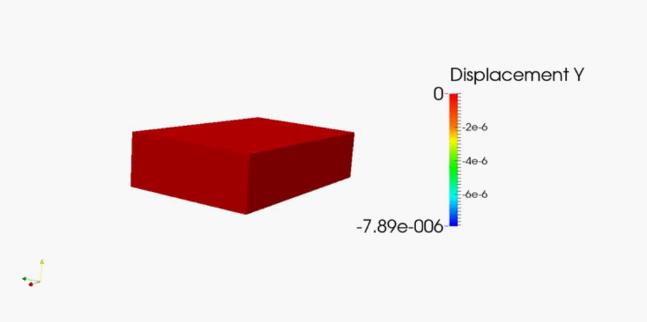
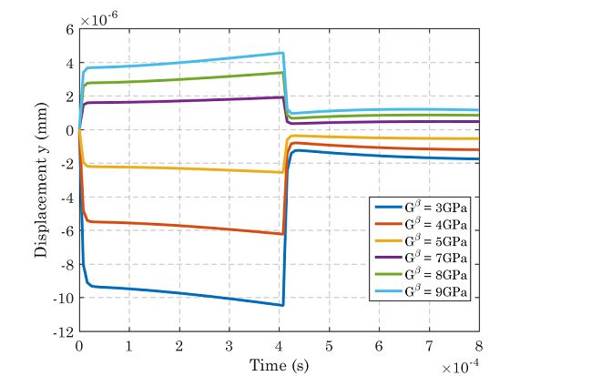
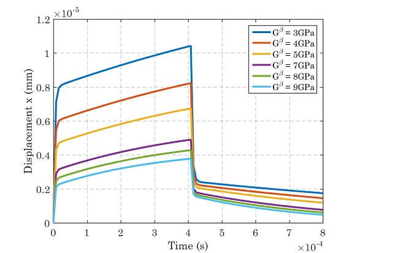
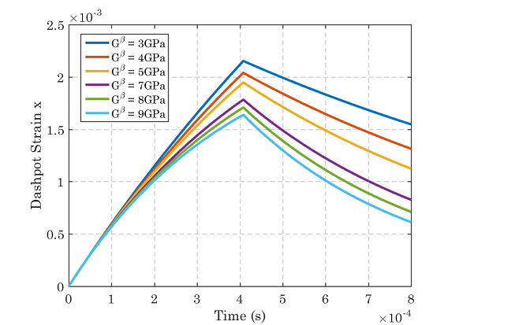

The following is a usage example of the gel model when dealing with two blocks of material with different properties. The situation described below is an example of viscoelastic processes within the polymers causing viscoelastic deformations.
There are two layers of a polymeric gel modelled, where the top layer (GEL 1) has a lower shear modulus than the bottom layer (GEL 2). When exposed to a change in the environmental conditions, the two layers deform differently, leading to a deformation.

Layered Gel Problem
Properties
When dealing with multiple blocks of material, each block of material must be defined within the config file. In the config example below there are two blocks of material (block_1 and block_2).
# Material parameters for Gel material model
[block_1]
# Spring Alpha
gAlpha = 3e03
vAlpha = 0.23
# Spring Beta
gBeta = 3e03
vBeta = 0.23
# Daspot
gBetaHat = 3
vBetaHat = 0.23
# Volume per solvent molecule
oMega = 18000
# Initial chemical potential
mU0 = 1.5e06
# Solvent transport material parameters
vIscosity = 1e-06
pErmeability = 1e-12
# User can set approximation order for each blocks independently
# Set approximation order of block 1 as quadratic function.
oRder = 3
[block_2]
# Spring Alpha
gAlpha = 6e03
vAlpha = 0.23
# Spring Beta
gBeta = 6e03
vBeta = 0.23
# Daspot
gBetaHat = 3
vBetaHat = 0.23
# Volume per solvent molecule
oMega = 18000
# Initial chemical potential
mU0 = 1.5e06
# Solvent transport material parameters
vIscosity = 1e-06
pErmeability = 1e-12
# User can set approximation order for each blocks independently
# Set approximation order of block 1 as quadratic function.
oRder = 3
Above file can be found $GEL_MODULE_DIRECTORT/gel_config_layered.in
Boundary Conditions
The applied boundary conditions are in the form of a chemical potential change on the boundary, representing an increase in the water content of the environment.
The boundary conditions can be calculated as shown in Dirichelt boundary condition for chemical potential
0 2.0
0.0004 2.0
0.000401 1.0
0.001 1.0
The chemical load history can be found in $GEL_MODULE_DIRECTORY/my_chemical_history_layered.in.
Layered Gel Mesh
When generating the mesh, each block must be assigned seperately as shown in the example below. Each block must be named in order to interact with the config file, i.e. block_1 is named GEL_1 and block_2 is named GEL_2. The mesh is split along the x-y plane in order to increase computational efficiency.
The script for generating the mesh is shown below:
reset
set duplicate block elements on
brick x 0.002 y 0.00025 z 0.00125
brick x 0.002 y 0.00025 z 0.00125
move volume 1 y 0.00025
webcut volume all with plane zplane noimprint nomerge
delete Volume 3 4
# Set block with volume with gel material
block 1 volume 1
block 1 name 'GEL_1'
block 2 volume 2
block 2 name 'GEL_2'
# Make a mesh
volume all scheme Tetmesh
volume all size auto factor 7
mesh volume all
#surface 3 scheme trimesh
#surface 3 size auto factor 2
#mesh surface 3
#
#surface 5 9 scheme trimesh
#surface 5 9 size auto factor 2
#mesh surface 5 9
#
#volume all scheme Tetmesh
#volume all sizing function type skeleton scale 7 time_accuracy_level 2 min_size auto max_size auto max_gradient 1.2 min_depth 2 max_depth 7 min_num_layers_3d 1 min_num_layers_2d 1 min_num_layers_1d 1 max_span_ang_surf 45 max_span_ang_curve 45
#volume all sizing function type skeleton
#mesh volume all
#volume all scheme Tetmesh
#volume 1 sizing function type skeleton scale 7 time_accuracy_level 2 min_size auto max_size auto max_gradient 1.2 min_depth 2 max_depth 7 min_num_layers_3d 1 min_num_layers_2d 1 min_num_layers_1d 1 max_span_ang_surf 45 max_span_ang_curve 45
#volume 1 sizing function type skeleton
#mesh volume 1
# Set Dirichelt boundary condition for solvent concentration
block 3 name 'CHEMICAL_LOAD_1'
block 3 attribute count 1
block 3 attribute index 1 1.5e06
# Set solvent flux, i.e.
block 5 name 'FLUX_CHEMICAL_LOAD_2'
block 5 attribute count 1
block 5 attribute index 1 0
# Kinematic boundary condition for mechanical field
create displacement on
surface 15 dof 1 fix 0
# Kinematic boundary condition for mechanical field
create displacement on
surface 25 dof 1 fix 0
# Kinematic boundary condition for mechanical field
create displacement on curve 29 dof 2 fix 0
# Kinematic boundary condition for mechanical field
create displacement on
surface 1 dof 3 fix 0
# Kinematic boundary condition for mechanical field
create displacement on
surface 7 dof 3 fix 0
# Kinematic boundary condition for mechanical field
create displacement on
surface 13 dof 3 fix 0
# Kinematic boundary condition for mechanical field
create displacement on
surface 23 dof 3 fix 0
# Set block 4 and set 10 node tetrahedrons in that block
block 4 tet all
block 4 element type TETRA10
The mesh file used in this example is located in $GEL_MODULE_DIRECTORY/meshes/layered_gel_example.cub
The journal file used in this example is located in $GEL_MODULE_DIRECTORY/meshes/layered_gel_example.jou
Executing Problem
To execute the problem, run this command from the gel directory:
mpirun -np 4 ./gel_analysis -my_file layered_gel_example.cub -my_gel_config \
gel_config_layered.in -my_chemical_load_history my_chemical_load_history_layered.in \
-ksp_type fgmres -ksp_final_residual -ksp_monitor -ksp_converged_reason -pc_type lu \
-pc_factor_mat_solver_package mumps -snes_monitor -ts_type beuler -ts_dt 0.000008 \
-ts_final_time 0.0008 -my_output_prt 1 -snes_linesearch_type basic -ts_monitor
Notes:
- Option -my_file gives name of the mesh file
- Option -my_gel_config gives the name of the material configuration file
- Option -my_chemical_load_history gives the name of the chemical load history file
- Option -ts_dt gives the size of each time step in seconds (s)
- Option -ts_final_time gives the final time in seconds (s)
- Option -my_output_prt gives the number of vtk files output (i.e. -my_output_prt 1, means each time step is processed)
- Option -np gives the number of processors to run on
- Option -snes_atol gives the absolute convergence tolerance
- Option -snes_rtol gives the relative convergence tolerance
- Option -snes_linesearch_type gives the linesearch type (currently can use basic or l2)
VTK files for ParaView
Running dynamic analysis out_values_1.h5m, out_values_2.h5m, ... are created for each time step. Post-processing mesh in output fails is stored in native MoAB data format using standard h5m.
VTK files can be generated using script located in users_modules/nonlinear_elasticity/do_vtk.sh. For example
../nonlinear_elasticity/do_vtk.sh out_*h5m
Results
Initially the gel sample is split along its x axis to increase computational efficiency. In order to view the full problem, first the surface needs extracted and then the results need reflected on the z minimum axis.

Layered Gel Animation
The results below are taken from the top (y positive) of the sample at the end of the bar where the deflections occur. The shear modulus of the viscoelastic spring is changed several times to view the effect this has on the displacements. For values of gBeta > gAlpha there is a large negative displacement in the y direction and for values of gBeta < gAlpha there is a smaller, and positive, y displacement.

Displacements in the y direction

Displacements in the x direction

Evolution of the dashpot strain in the x direction
Future Work
It is hoped that the gel model can be implemented in more complex materials, consisting of many layers, similar to that of a wood cell. For an example of how to apply to a ligno cellulosic, isotropic cell, visit Wood Cell (Response to an Environmental Change).
To download the gel model visit: https://bitbucket.org/likask/mofem_um_gels